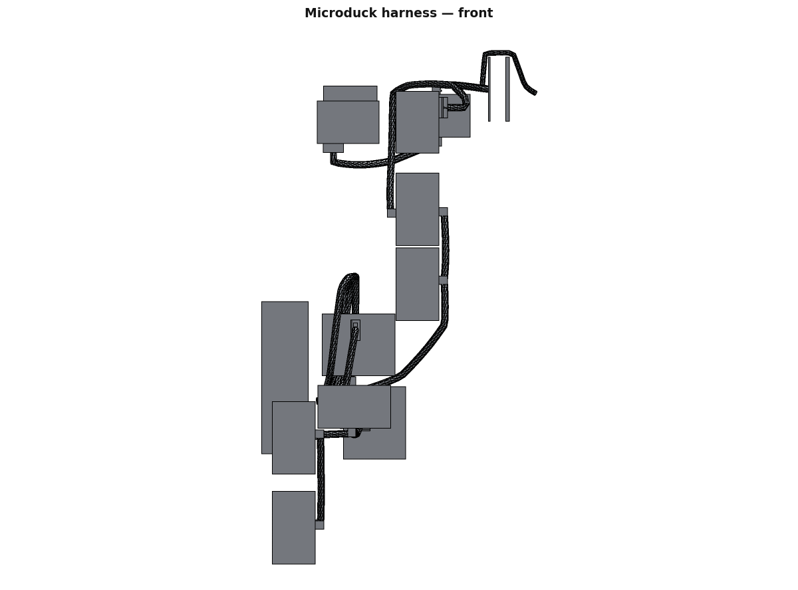
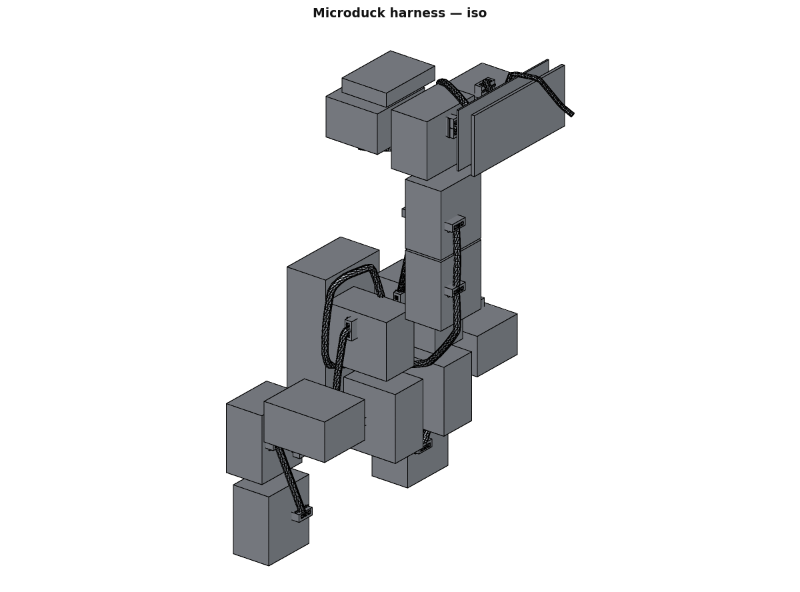
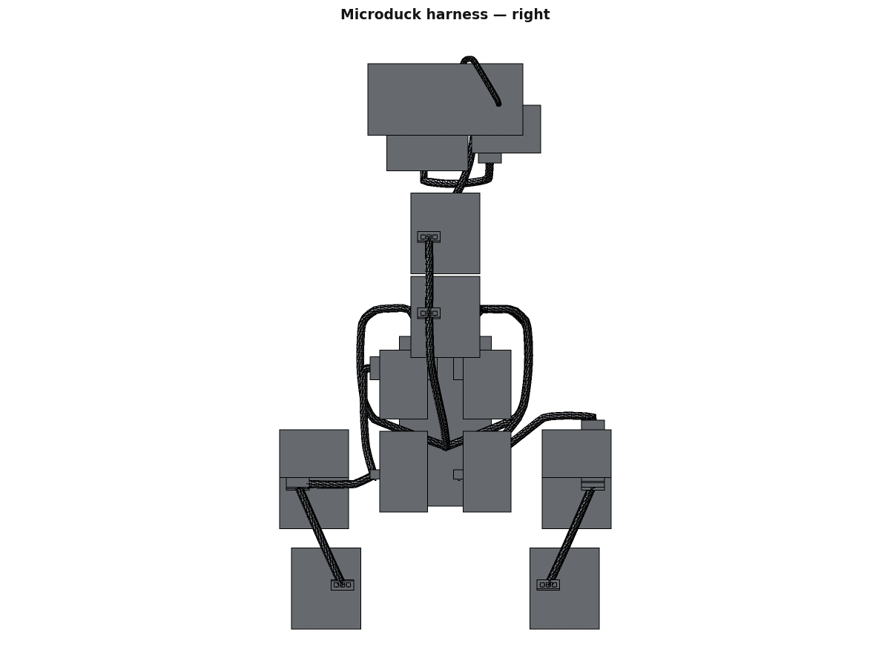
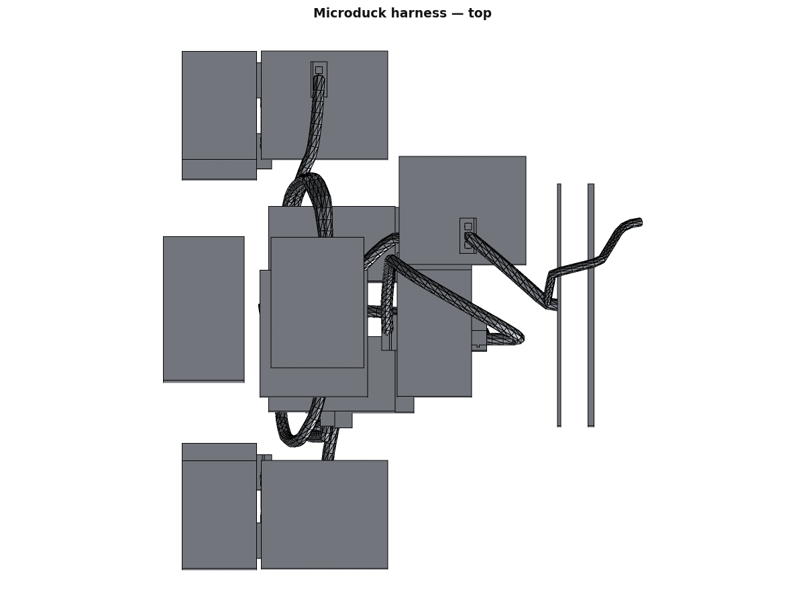

Every cable in this robot as a routed path through the measured free space, swept
as a real solid at its stated jacket diameter, ended in a real JST housing placed through a
connection’s mate(), and measured back: routed length against the figure in
wiring/cables.json, achieved bend radius, minimum clearance to material, and whether
the centreline passes through anything. Where an endpoint is not located, nothing is drawn and
the reason is printed.
tools/gen_wiring3d.py
frame: MJCF world, zero pose, mm
connection:jst-eh-3pin’s own mate()
and every placement was re-checked by pushing the housing’s local origin and axis back
through the transform: worst error 0.000000 mm and
0.000000 deg over all 30.
Routed length and cables.json’s cable_mm are BOTH printed and
neither overwrites the other: the routed figure is the length at the zero pose, the
cable_mm figure is a floor plus a slack allowance over each crossed joint’s
whole range. Volume is the divergence theorem over the cable’s own closed mesh.
| run | ends | OD mm | routed mm | cables.json mm | Δ mm | min clear mm | bend R mm | pierce | vol mm³ | verdict |
|---|---|---|---|---|---|---|---|---|---|---|
dxl-hat-id34 | hat J14 → id34 | 3.1243 | 31.932 | 35 | -3.068 | 1.2663 | 2.581 | 0 | 246.35 | CANNOT DETERMINE |
dxl-id34-id33 | id34 → id33 | 3.1243 | 67.404 | 60 | 7.404 | 1.2663 | 5.443 | 0 | 500.69 | CANNOT DETERMINE |
dxl-id33-id32 | id33 → id32 | 3.1243 | — | 50 | — | — | — | — | — | FAIL |
dxl-id32-id31 | id32 → id31 | 3.1243 | 117.571 | 165 | -47.429 | 0.6739 | 3.035 | 0 | 873.51 | FAIL |
dxl-id31-id30 | id31 → id30 | 3.1243 | 32.042 | 35 | -2.958 | 1.2663 | 117.600 | 0 | 239.39 | CANNOT DETERMINE |
dxl-id30-imu200 | id30 → imu200 (unlocated) | 3.1243 | 93.703 | 120 | -26.297 | 1.2663 | 5.036 | 0 | 699.49 | CANNOT DETERMINE |
dxl-imu200-id20 | imu200 (unlocated) → id20 | 3.1243 | 124.639 | 40 | 84.639 | 0.6739 | 3.782 | 0 | 927.44 | FAIL |
dxl-id20-id21 | id20 → id21 | 3.1243 | 132.457 | 65 | 67.457 | 1.2663 | 2.955 | 0 | 987.16 | CANNOT DETERMINE |
dxl-id21-id22 | id21 → id22 | 3.1243 | 74.989 | 125 | -50.011 | 1.2663 | 2.833 | 0 | 556.81 | CANNOT DETERMINE |
dxl-id22-id23 | id22 → id23 | 3.1243 | 14.286 | 20 | -5.714 | 1.4378 | — | 0 | 106.73 | CANNOT DETERMINE |
dxl-id23-id24 | id23 → id24 | 3.1243 | 45.982 | 95 | -49.018 | 1.4378 | 349.179 | 0 | 343.53 | CANNOT DETERMINE |
dxl-imu200-id10 | imu200 (unlocated) → id10 | 3.1243 | 128.018 | 40 | 88.018 | 1.2663 | 3.499 | 0 | 951.81 | CANNOT DETERMINE |
dxl-id10-id11 | id10 → id11 | 3.1243 | 52.658 | 65 | -12.342 | 1.2663 | 5.274 | 0 | 390.19 | CANNOT DETERMINE |
dxl-id11-id12 | id11 → id12 | 3.1243 | 32.967 | 125 | -92.033 | 1.2663 | 7.895 | 0 | 246.16 | CANNOT DETERMINE |
dxl-id12-id13 | id12 → id13 | 3.1243 | 14.286 | 20 | -5.714 | 1.4378 | — | 0 | 106.73 | CANNOT DETERMINE |
dxl-id13-id14 | id13 → id14 | 3.1243 | 45.982 | 95 | -49.018 | 1.4378 | 349.178 | 0 | 343.53 | CANNOT DETERMINE |
tof-hat | hat J5 → tof (unlocated) | 2.2000 | 38.501 | 35 | 3.501 | 1.1361 | 3.049 | 0 | 220.41 | CANNOT DETERMINE |
spk-hat | hat J1 → speaker (unlocated) | 2.5000 | — | 70 | — | — | — | — | — | FAIL |
mic-hat | — | 2.2000 | — | — | — | — | — | — | — | CANNOT DETERMINE |
csi-radxa-camera | radxa (unlocated) → camera (unlocated) | 2.0000 | — | 15 | — | — | — | — | — | FAIL |
bat-hat | battery (unlocated) → hat J14 | 3.0000 | — | 340 | — | — | — | — | — | FAIL |
hat-radxa-40pin | — | 3.0000 | — | 0 | — | — | — | — | — | CANNOT DETERMINE |
hat-dxl-port | — | 3.0000 | — | — | — | — | — | — | — | CANNOT DETERMINE |
Cables in red, connector housings in amber, the bodies they plug into in grey.




Five HAT-end runs were recorded with the endpoint “HAT mesh centroid — connector
positions unpublished”. They are published: Pollen’s board is Apache-2.0 and is in
reference/pollen-elec-rpi-robot-hat. But the board in our CAD is the PRE-RELEASE
revision fbd885d (out/pcb/hat/mesh-revision.json), whose connector bank
is at the other end. One reflection about board
x = 28.625 mm maps every 0.95 mm
connector hole column of the mesh onto its released position, residual
2.9e-15 mm — so it is a mirror, not the
“end-for-end” adjective, and both positions are given here.
| ref | series | what | as built (C1) world mm | as modelled (fbd885d) world mm | Δ mm | nets |
|---|---|---|---|---|---|---|
J1 | Wago 2059-302 | spring terminal | [59.04, -7.7638, 240.8546] | — | — | 1:Net-(J1-Pin_1), 2:Net-(J1-Pin_2) |
J11 | EH 4-pin | RS-485 4P (U8 SIT3088E) | [59.04, 20.3936, 243.3046] | [59.04, -19.6564, 243.3046] | 40.0500 | 1:GND, 2:+BATT, 3:Net-(J11-Pin_3), 4:Net-(J11-Pin_4) |
J13 | EH 3-pin | Dynamixel TTL 3P — the XL330 bus | [59.04, 30.0436, 247.6046] | [59.04, -29.3064, 247.6046] | 59.3500 | 1:GND, 2:+BATT, 3:Net-(J13-Pin_3) |
J14 | EH 3-pin | Dynamixel TTL 3P — the XL330 bus | [59.04, 25.2436, 247.6046] | [59.04, -24.5064, 247.6046] | 49.7500 | 1:GND, 2:+BATT, 3:Net-(J13-Pin_3) |
J2 | Wago 2059-302 | spring terminal | [59.04, -17.1064, 240.9015] | — | — | 1:GND, 2:Net-(J2-Pin_2) |
J3 | EH 4-pin | RS-485 4P (U8 SIT3088E) | [59.04, 15.5936, 243.3046] | [59.04, -14.8564, 243.3046] | 30.4500 | 1:GND, 2:+BATT, 3:Net-(J11-Pin_3), 4:Net-(J11-Pin_4) |
J4 | 2x20 header | 40-pin GPIO to the Radxa Zero 3W | [60.0, -0.0064, 262.5546] | — | — | 1:+3V3, 10:/Schematic/Audio/IO_15, 11:unconnected-(J4-Pin_11 |
J5 | SH 4-pin | Stemma/Qwiic I2C — the ToF board | [59.04, 28.2362, 255.7546] | — | — | 1:GND, 2:+3V3, 3:/Schematic/Audio/IO_02, 4:/Schematic/Audio/ |
J6 | SH 4-pin | Stemma/Qwiic I2C | [59.04, 20.2362, 255.7646] | — | — | 1:GND, 2:+3V3, 3:Net-(J6-Pin_3), 4:Net-(J6-Pin_4), MP:GND |
J7 | SH 4-pin | Stemma/Qwiic I2C | [59.04, 1.7736, 254.4796] | — | — | 1:GND, 2:+3V3, 3:/Schematic/Audio/IO_08, 4:/Schematic/Audio/ |
J8 | SH 4-pin | Stemma/Qwiic I2C | [59.04, -6.2638, 254.4946] | — | — | 1:GND, 2:+3V3, 3:/Schematic/Audio/IO_10, 4:/Schematic/Audio/ |
J9 | Wago 2059-302 | spring terminal | [59.04, -23.5064, 240.9015] | — | — | 1:GND, 2:Net-(J9-Pin_2) |
The free space is a 1.0 mm occupancy of every triangle of every placed body — 347464 occupied cells in a 186×183×305 grid, and it now includes the 64 placed screws as built solids, not only the 70 reference meshes.
The wire is 21 AWG — ROBOTIS e-Manual XL330-M288-T 4.4 'Wire Gauge for DYNAMIXEL | 21 AWG' — bare copper 0.7229 mm by ASTM B258 d = 0.127 x 92^((36-awg)/39). The jacket OD is CANNOT DETERMINE: the only published bound is JST eEH.pdf p.2, contact SEH-001T-P0.6, 'Insulation O.D. 1.0 to 1.9' (part:jst-seh-001t-p0.6 spec), a 1.0–1.9 mm window, and this lane uses its midpoint 1.45 mm and labels every figure that rests on it NOMINAL.
The clearance floor is 1.0 mm and it is CHOSEN BY THIS LANE — no source in this repo states a cable-to-body clearance for the Microduck.
The sweep is parallel-transport tube, 16-gon — arithmetic, not the
kernel, because three kernel sweeps were each defeated by a route in this set (the reasons are in
sim/route3d_solids.py). The polygon inscribes the circle, so every volume here is
2.55 % under the true tube.
Mass is computed from the geometry and two named densities: copper 8.96 g/cm³ (IEC 60228 / CRC, annealed) and jacket 1.38 g/cm³ (plasticised PVC, a STATED NOMINAL — no vendor states the X3P's jacket material).
Placement: TRIAD.md: a joined part gets no literal transform. Every housing came out of connection:jst-eh-3pin's mate(); every cable's shape was derived by the router from the frames at its two ends.
part:microduck-robot-hat-pcb to the C1 geometry.reference/. These are the shortest routes that clear.
Settled by: an internals photograph, or a teardown.